Waterless Foam Shampoo
A cloud-soft foam you massage in and towel off. It loosens grime and neutralises smell in about five minutes.
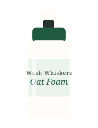
Oat & Coconut Foam200 ml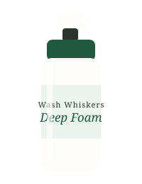
Deep Coat Foam250 ml
Wash Whiskers develops rinse-free care solutions for dogs, cats, small pets and birds. They are safe for animals, safe for the hands that use them, and made without animal-harming ingredients.
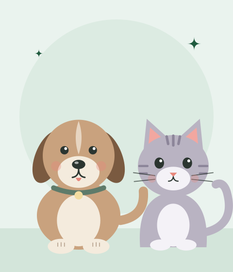
Wash Whiskers was founded on a simple observation: most pets find water baths stressful, and the products used in them are often harsh on the people doing the grooming.
We develop waterless foams, mists, powders and wipes that clean effectively while protecting the coat's natural oils. Every formula is assessed on two counts: safety for the animal and safety for the human hand. It is all achieved without animal testing.
Each category is organised into four specialised product lines. Select a category to view its full details.
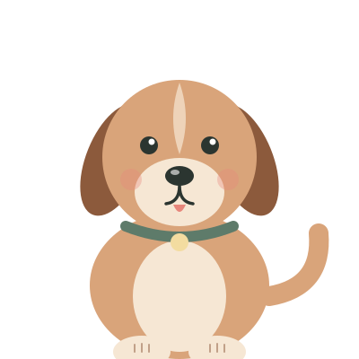
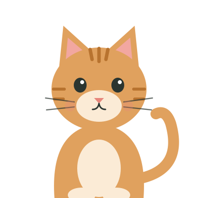
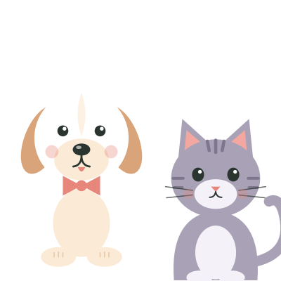
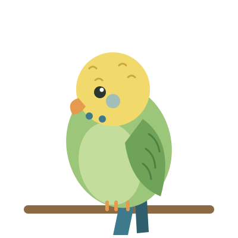
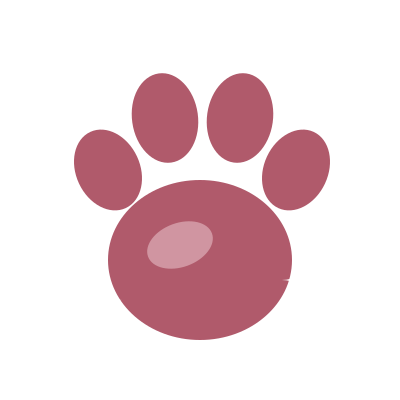
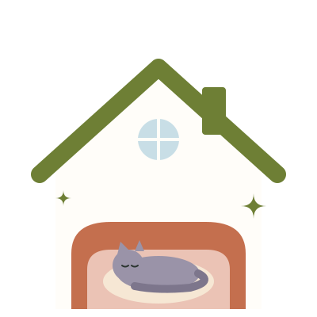
Expand any category to see its product lines, what each one is designed for, and the products in each range.
Rinse-free foams, dry powders and wipes that lift dirt, oil and odour straight from the coat — no tub, no hose, no soggy dog shaking all over your sofa.
A cloud-soft foam you massage in and towel off. It loosens grime and neutralises smell in about five minutes.

Oat & Coconut Foam200 ml
Deep Coat Foam250 mlA fine, talc-free powder that soaks up oil and odour, then brushes straight out of the coat.
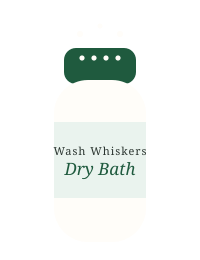
Arrowroot Dry Bath120 gThick plant-fibre wipes soaked in a mild cleanser, for a quick full-body refresh after walks.
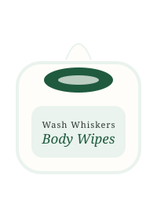
Bamboo Body Wipes60 wipes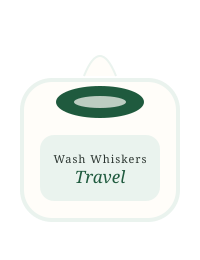
Travel Wipe Pack20 wipesA light leave-in mist that refreshes, conditions and helps the brush glide through knots.
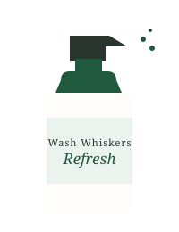
Aloe Refresh Mist200 ml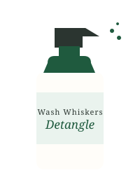
Silk Detangle Spray200 mlCats hate water — so we took it out. Gentle mousses, wipes and powders let you freshen your cat in a few calm strokes, with formulas safe if they lick their fur.
A whisper-quiet mousse, with no spray hiss to scare your cat. It lifts dander and greasy patches.
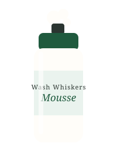
Quiet Cloud Mousse150 ml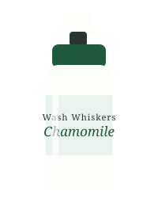
Chamomile Mousse150 mlSoft, stroke-like wipes that feel like grooming from their mother — a calm way to clean.
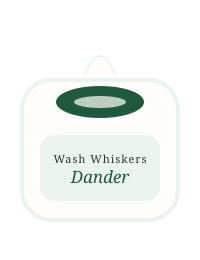
Dander-Less Wipes50 wipesAn extra-fine powder for long-haired breeds that soaks up oil and prevents matting.
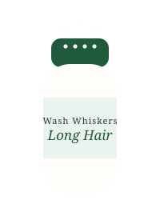
Long-Hair Dry Shampoo100 g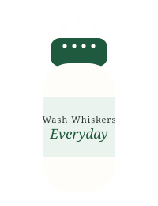
Everyday Dry Shampoo100 gSilicone-nub mitts that pair with our mousse to massage clean and catch loose fur.
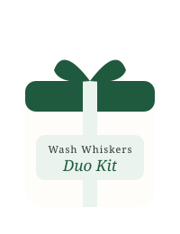
Mitt + Mousse DuoSet of 2Little ones should not be fully bathed in water too early. Our extra-mild, tear-free range keeps puppies and kittens clean from 8 weeks old.
Our mildest foam: no stinging near the eyes, no strong scent, just a soft clean.
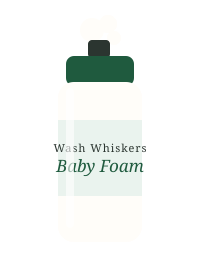
Baby Paws Foam150 ml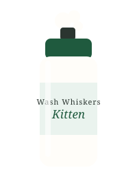
Kitten Cloud Foam150 mlThin, extra-soft wipes for messy faces, bottoms and accidents during training.
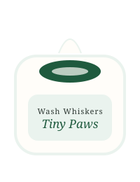
Tiny Paws Wipes80 wipes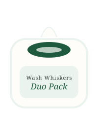
Clean-Up Wipes Duo2 × 80 wipesSilky cornstarch powder that keeps young coats dry, fluffy and comfortable.
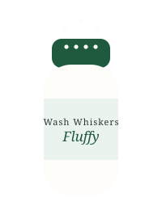
Fluffy Coat Powder80 gEverything for a calm first grooming routine, in one gift-ready box.
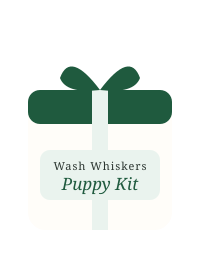
Puppy Starter Kit4 items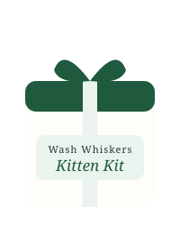
Kitten Starter Kit4 itemsRabbits, guinea pigs and hamsters should almost never be bathed in water. Our spot-clean range is made for delicate skin and quick-to-chill small bodies.
A dry foam for bunny bottoms and soiled patches, without the stress or chill of a bath.
Mild wipes and a refresh mist for longer-haired cavies such as Peruvians and Abyssinians.
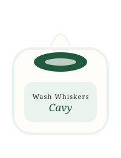
Cavy Care Wipes40 wipes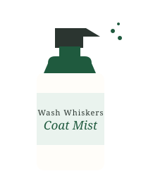
Cavy Coat Mist100 mlFine natural dust baths that copy how desert rodents clean themselves in the wild.
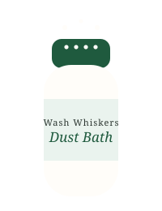
Desert Dust Bath500 g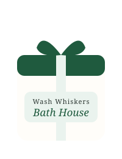
Dust Bath House1 pieceFerrets have a natural musk — bathing too often makes it worse. Freshen gently instead.
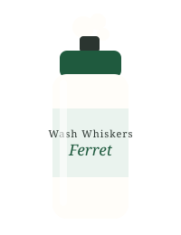
Ferret Fresh Foam100 mlFeather-safe mists and wipes that keep birds' plumage glossy and their perches clean, with no heavy oils, no fumes and nothing harmful if they preen it.
An ultra-fine mist that copies soft rain, so preening comes naturally and feathers stay glossy.
Small, gentle wipes for sticky beaks after fruit and dusty feet after perching.
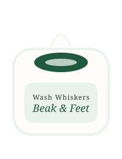
Beak & Feet Wipes40 wipesA plant-based, fume-free cleaner for perches, toys and cage bars.
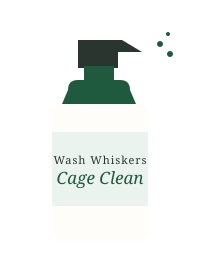
Cage Clean Spray500 ml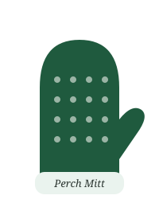
Perch Scrub Mitt1 pieceBundled routines for new bird parents and gifting.
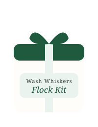
Happy Flock Kit3 itemsPaws carry the outside in. Our foaming paw cleaners and balms clean between the toes and protect pads, and none of it needs a sink.
A foaming cleanser that reaches between toes and pads, then wipes away with a towel.
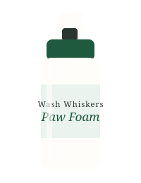
After-Walk Paw Foam150 ml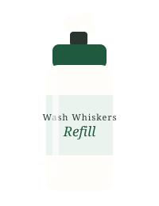
Paw Foam Refill500 mlTextured, extra-thick wipes made for quick paw clean-ups at the door.
A rich, lickable balm that soothes cracked pads and protects against hot roads.
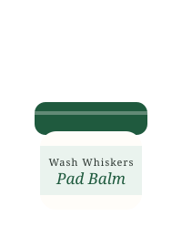
Pad Repair Balm60 g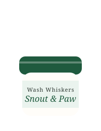
Snout & Paw Balm30 gTools and treatments for well-kept nails and soft, healthy pads.
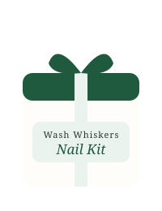
Calm Nail Kit3 itemsGentle face care for the delicate spots: tear-stain pads, ear wipes and dental foams that clean without brushing battles or water.
Soft finger wipes and a gentle solution to lift wax and odour from outer ears.
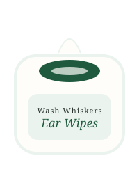
Ear Finger Wipes50 wipes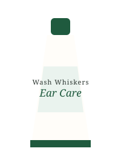
Gentle Ear Solution100 mlPre-soaked pads that clean eye corners and fade stubborn tear stains over time.
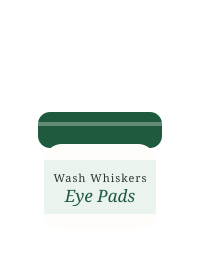
Bright Eye Pads60 padsA foam that freshens breath and loosens plaque. Just apply it to the gums — no brush or rinse.
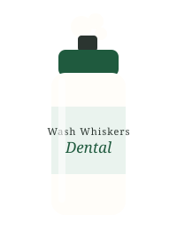
Fresh Breath Foam100 ml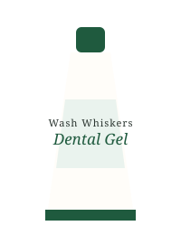
Dental Gel70 gTextured dental wipes that slip over a finger to polish teeth gently.
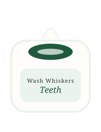
Tooth Polish Wipes50 wipesPet-safe sprays and wipes for beds, crates, carriers and sofas. They break down odours with plant enzymes rather than covering them with perfume.
A fabric mist for pet beds, blankets and sofas that breaks down odour at the source.
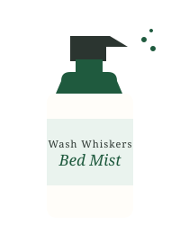
Cosy Bed Refresh500 mlA concentrated enzyme spray for accidents and stubborn smells.
Large surface wipes for crates, carriers, bowls and car seats.
Tools that make waterless cleaning even easier: towels, brushes and mitts.
Four steps that deliver the result of a bath without the water, the stress or the drying time.
A foam, mist or powder is applied directly to the coat, focusing on soiled areas.
Plant-derived cleansers bind to dirt, oil and odour as the product is worked in.
A dry towel or brush lifts the product away, taking impurities with it.
Conditioning botanicals stay on the coat, leaving it soft, fresh and protected.
Our standards protect three groups: the animals we care for, the people who groom them, and the environment they share.
Formulas are tested on human skin, so they're safe for the hands of pet parents and groomers.
No product or ingredient is ever tested on animals at any stage.
Gentle, coconut-derived cleansers in place of harsh detergents.
Formulated for the skin pH of animals, not of humans.
Botanical ingredients, and no essential oils that are toxic to cats.
Rinse-free by design, so no water is used in grooming.
Our solutions serve households and professional and institutional care settings across the pet care industry.
Simple, calm and water-free hygiene routines at home.
Faster turnaround between clients and lower water use.
Gentle cleaning for recovering, elderly or anxious animals.
A complete, well-defined waterless range for stockists.
Hygiene at scale without the time and cost of bathing.
Keep young and working animals clean between baths.
For product information, partnerships, distribution or media enquiries, please use the form or contact us directly.